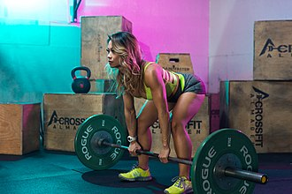

The deadlift is a weight training exercise in which a loaded barbell or bar is lifted off the ground to the level of the hips, torso perpendicular to the floor, before being placed back on the ground. It is one of the three powerlifting exercises, along with the squat and bench press.
